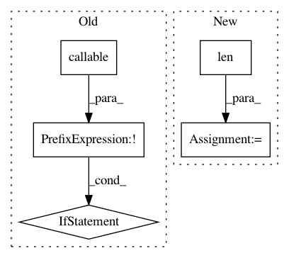

bb8cf918f0a6b0f63db15c2fd34f5d314ff51b02,finetune/input_pipeline.py,BasePipeline,get_target_input_fn,#BasePipeline#Any#Any#,316
Before Change
def get_target_input_fn(self,Xs,batch_size=None):
if not callable(Xs):
Xs_fn = lambda: self.wrap_tqdm(Xs, False)
else:
Xs_fn = lambda: self.wrap_tqdm(Xs(), False)
dataset_encoded = lambda: itertools.chain.from_iterable(map(self._encode_separate_inference, Xs_fn()))
batch_size = batch_size or self.config.batch_size
After Change
return tf_dataset
def get_target_input_fn(self, features, batch_size=None):
batch_size = min(len(features),64)
features = pd.DataFrame(features).to_dict("list")
for key in features:
features[key] = np.array(features[key])
tf_dataset = lambda: tf.data.Dataset.from_tensor_slices(dict(features)).batch(batch_size)
In pattern: SUPERPATTERN
Frequency: 3
Non-data size: 5
Instances
Project Name: IndicoDataSolutions/finetune
Commit Name: bb8cf918f0a6b0f63db15c2fd34f5d314ff51b02
Time: 2019-06-20
Author: matthew.bayer@indico.io
File Name: finetune/input_pipeline.py
Class Name: BasePipeline
Method Name: get_target_input_fn
Project Name: IndicoDataSolutions/finetune
Commit Name: 2028dffb2a29570c72f10bcb3e35e33fa7fb1c03
Time: 2018-11-13
Author: madison@indico.io
File Name: finetune/base.py
Class Name: BaseModel
Method Name: _inference
Project Name: IndicoDataSolutions/finetune
Commit Name: 3052e961e54ead28c717b6bbf5c785946e727fa9
Time: 2019-06-20
Author: matthew.bayer@indico.io
File Name: finetune/input_pipeline.py
Class Name: BasePipeline
Method Name: get_target_input_fn